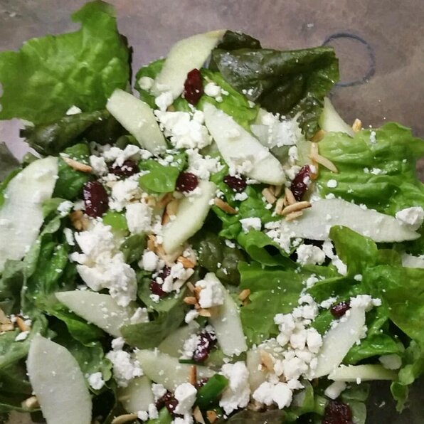

Salad

Recipe for Cornucopia salad from Allrecipes.com
Ingredients & Dressings
Ingredients
- ¼ cup sliced almonds
- 1 tablespoon white sugar
- 1 head red leaf lettuce, torn
- 3 green onions, chopped
- 1 Granny Smith apple, cored and chopped
- 1 avocado - peeled, pitted, and chopped
- ½ cup dried cranberries
- ¼ cup crumbled blue cheese
Dressings
- tablespoons red wine vinegar
- 2 teaspoons white sugar
- salt and pepper to taste
- ¼ cup vegetable oil
Steps
- Place the almonds and 1 tablespoon of sugar in a small skillet over medium-low heat, and cook and stir until the sugar melts and the almonds brown, watching carefully to avoid burning. Remove from heat and allow to cool.
- In a large salad bowl, mix the lettuce, green onions, apple, avocado, dried cranberries, blue cheese, and cooked almonds.
- Whisk together the vinegar, 2 teaspoons of sugar, and salt and pepper in a bowl, and stir in the vegetable oil. Pour the dressing over the salad, and gently toss to combine.